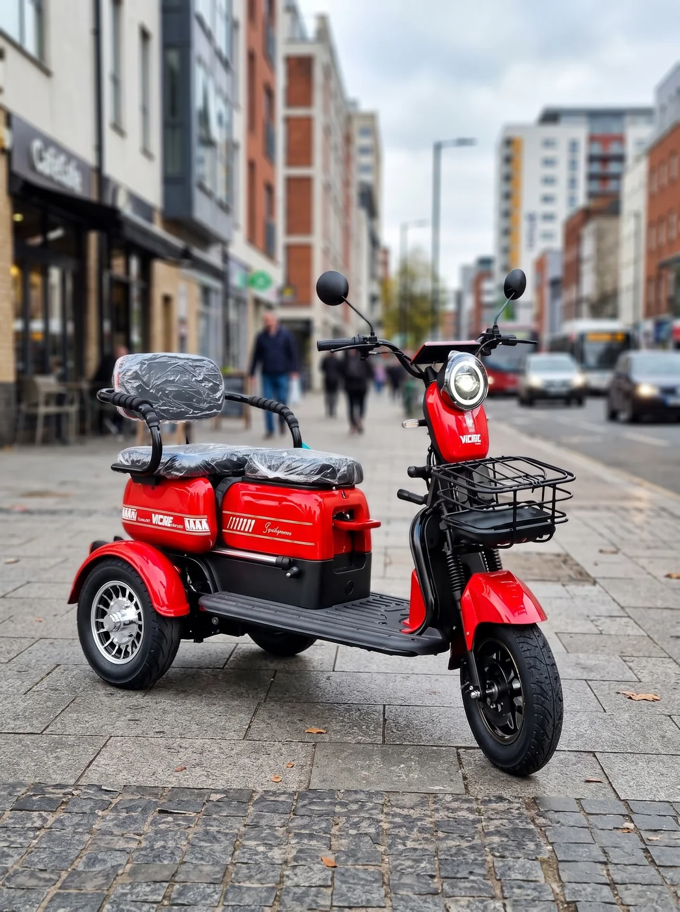

Parte elétrica
Falhas elétricas, perda de desempenho e bateria com comportamento diferente do normal.
Triciclos elétricos em Goiânia
Conheça os modelos disponíveis na Scooter Goiânia e encontre o triciclo que faz mais sentido para a sua rotina, com garantia, oficina especializada e suporte depois da compra.
Por que escolher um triciclo?
Para quem não se sente tão à vontade em um veículo de duas rodas, o triciclo oferece uma base maior de apoio durante o uso. É uma opção que pode fazer sentido para quem procura praticidade no dia a dia, mas prefere não depender do mesmo equilíbrio exigido por uma bike ou scooter.

Modelos
Compare potência, autonomia, velocidade máxima, peso suportado, bateria e garantia.
* O catálogo do Fênix apresenta “90 dias (6 meses)”. Confirme a condição vigente com a equipe antes da compra. Preços e disponibilidade sujeitos a confirmação.
Garantia e pós-venda
Uma dúvida no funcionamento, uma falha ou uma necessidade de manutenção pode aparecer com o uso. Quem compra na Scooter Goiânia conta com suporte pós-venda e orientação sobre a garantia do modelo adquirido. Se houver algum problema, o cliente tem uma equipe para procurar.
Oficina especializada
A Scooter Goiânia conta com oficina especializada para atender necessidades de manutenção e suporte dos veículos elétricos comercializados pela loja.
Falhas elétricas, perda de desempenho e bateria com comportamento diferente do normal.
Revisões, dúvidas sobre manutenção e problemas em pneus, rodas ou suspensão.
Avaliação de itens relacionados à garantia e orientação sobre o próximo passo.
Comprou na Scooter Goiânia e apareceu algum problema? Fale com a equipe antes de procurar assistência por conta própria.
Falar com a oficinaAinda com dúvidas?
Comece pela rotina de uso. Distância percorrida, peso suportado, tamanho do veículo e autonomia ajudam a filtrar os modelos que fazem mais sentido para você.
Sim. Pense também onde o triciclo ficará guardado e nos espaços por onde ele precisará passar.
Sim. O prazo e as condições variam conforme o modelo escolhido.
Você pode procurar a Scooter Goiânia. A loja conta com suporte pós-venda e oficina especializada para orientar o atendimento.
Sim. Se estiver em dúvida entre dois modelos, fale com a equipe e conte como pretende usar o triciclo.
Ainda está escolhendo?
Consulte modelos disponíveis, tire dúvidas antes da compra ou fale com a equipe sobre garantia e assistência.